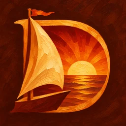

Duralek GamesPress page
From a village pitch to the top: build the squad, the stadium and the community around a small club in the Balkans. Played in Serbian and English.
Facts
- Genre: Football · club owner
- Developer and publisher: Duralek
- Price: free
- Single-player football club owner game
- Free, no ads, no accounts, no tracking, no purchases
- Works offline
- Serbian and English
Download
Assets
Icon: od-sela-do-vrha.webp. Trailer: od-sela-do-vrha.mp4. More art on request.